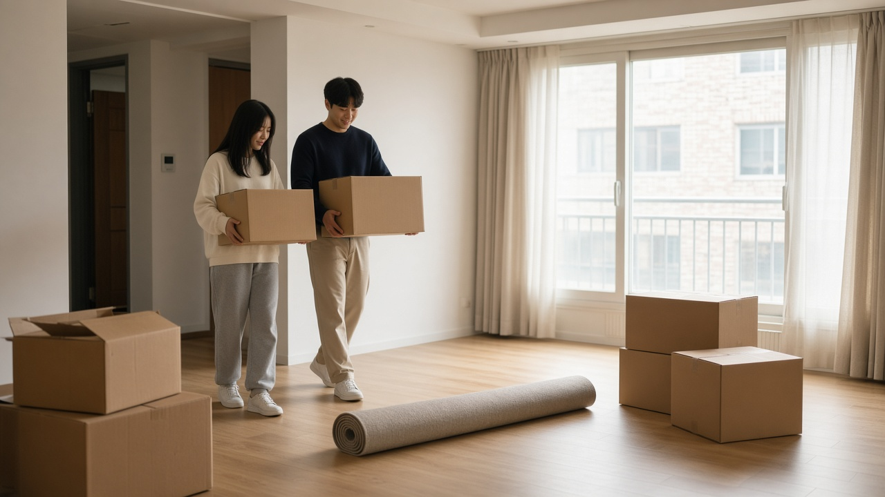

생애최초 주택 취득세 감면, 전입신고가 111일 만에 끝났는데도 추징이 취소된 이유

처음으로 집을 사면서 취득세 감면을 받았다면 3개월 안에 전입신고를 마쳐야 한다는 말을 한 번쯤 들어 보셨을 거예요.
그런데 이사는 제때 했는데 서류 입력이 꼬여 전입신고가 늦어지면 감면받은 세금을 모두 토해 내야 하는지 걱정되기 마련이지요.
조세심판원이 11월 20일 공개한 2026년 3분기 주요 심판결정에 바로 이런 사례가 들어 있었어요.
어떤 사정이 인정됐는지, 함께 공개된 상속주택 종부세와 수용 토지 양도세 결정까지 차례로 정리해 볼게요.
생애최초 감면은 3개월 안 전입과 계속 거주가 조건이에요
지방세특례제한법은 생애최초로 주택을 사서 취득세 감면을 받은 사람이 정당한 사유 없이 취득일부터 3개월 안에 전입신고를 하고 계속 살지 않으면 감면받은 세금을 추징하도록 하고 있어요.
이번 사례의 청구인은 12억원 이하 주택을 처음 사서 감면을 받았지만, 3개월 안에 전입신고를 마치지 못해 결국 감면분을 내야 했어요.
과세관청은 늦어진 원인이 청구인의 입력 실수이니 정당한 사유가 없다고 봤어요.
그래서 청구인은 이미 낸 세금을 돌려 달라고 했다가 거부당하자 조세심판원에 심판을 청구했어요.
실제로 살았고 두 번 신고했다는 점이 인정됐어요
청구인은 집을 산 직후부터 실제로 들어가 살았고, 3개월 유예기간 안에 전입신고를 두 번이나 했어요.
다만 세대주를 잘못 적는 등의 사정으로 처리가 미뤄져 최종 전입신고는 취득일부터 111일이 지나서야 끝났어요.
심판원은 유예기간 안에 실거주를 시작한 것으로 보이고, 실거주나 전입신고 의무를 게을리했다고 볼 다른 사정이 없다고 판단했어요.
이런 경우까지 추징 규정을 적용하는 것은 무리라며 7월 1일 청구를 받아들였고, 사건번호는 조심 2026방0505예요.
상속주택 종부세는 신고기한 전 상속등기가 기준이 됐어요
두 번째 결정은 상속주택의 종합부동산세를 누가 내야 하느냐의 문제였어요.
상속등기를 하기 전에 재산세 과세기준일이 지나면서 돌아가신 분의 배우자 명의로 재산세가 나왔고, 과세관청은 같은 사람에게 종부세까지 부과했어요.
하지만 상속인들은 종부세 신고기한 전에 다른 상속인 명의로 상속등기를 마치고 각자 종부세를 신고하고 납부했어요.
심판원은 종부세가 스스로 신고해 세액을 확정할 수 있는 세금이라는 점을 들어 신고기한 기준으로 사정을 따져야 한다고 보고, 배우자에게 매긴 종부세를 위법하다고 9월 16일 결정했어요.
증여받은 땅이 수용되면 증여자 취득일로 감면을 따져요
세 번째 결정은 부모님 같은 직계존속에게 증여받은 땅이 공익사업으로 한국토지주택공사에 넘어간 경우예요.
조세특례제한법은 사업인정고시일부터 2년 이전에 취득한 땅을 공익사업에 양도하면 양도소득세를 감면해 주는데, 과세관청은 청구인이 2년 안에 취득했다며 감면을 거부했어요.
청구인은 증여자의 취득가액을 그대로 쓰는 이월과세 대상이었고, 심판원은 이런 땅은 감면 요건도 증여자가 취득한 날을 기준으로 판단해야 한다고 봤어요.
그 기준으로 보면 2년 이전 취득에 해당해 감면 요건을 채운다며 8월 13일 양도소득세를 다시 계산하라는 경정 결정을 내렸어요.
비슷한 처분을 받았다면 이렇게 확인해 보세요
세 결정 모두 형식적인 요건 하나만 보지 않고 실제로 살았는지, 신고기한 전에 무엇을 했는지 같은 실질을 따졌다는 공통점이 있어요.
다만 심판 결정은 각 사건의 사정을 따진 결과라서 내 사례에 그대로 들어맞는다고 단정하기는 어려워요.
생애최초 감면을 받았다면 이사한 날짜와 전입신고 접수 기록, 관리비나 공과금 영수증처럼 실제로 살았다는 자료를 미리 챙겨 두는 게 좋아요.
결정 요약과 전문은 조세심판원 누리집 심판결정례 메뉴의 주요심판결정례에서 볼 수 있고, 불복 기한과 절차는 세무 전문가나 관할 기관에 꼭 함께 확인해 보세요.
참고 자료 조세심판원 2026년 3분기 주요 심판결정 공개 보도자료 2026년 11월 20일, 연합뉴스 2026년 11월 20일 조세심판원 전입신고 지연돼도 실거주 확인시 취득세 감면 기사, 국세신문 2026년 11월 20일 기사, 조세심판원 누리집 주요심판결정례
태그 생애최초주택 취득세감면 생애최초취득세 전입신고 취득세추징 조세심판원 상속주택종부세 종합부동산세 공익사업양도세 세금정보